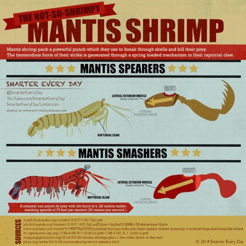
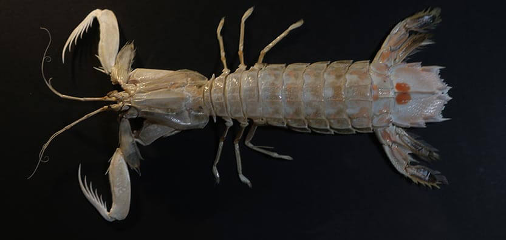

The Mantis Shrimp is a very intersting animal.
The reason these animals are so intresting,
it is one of the most powerful shrimp.

The reason how this tiny of a shrimp is so powerful, is it's body structure.
It's arm structure is like a spring, which makes it so powerful,
A punch is the same speed of a .22 caliber bullet,
as the Mantis Shrimp uses this as an advantage, using this speed to paralyze prey or enimies.
Here is a video of a Mantis Shrimp against Giant Crabs and other animals.
Although the Mantis Shrimp is powerful, it is still able to break and regrow it's "clubs"
Research is being done about this shrimp, hopes for weapon advancement.
They have grabers above the clubs, for picking up paralyzed prey.
These anuimals get this name from a praying mantis, because they have a structure like a praying mantis
A close up of a Peacock Mantis Shrimp
Mantis are not common in aquariums, because they'll kill everything in the same tank.
They can break the glass as well, temping to attack humans.
There are two types of mantis shrimp, all the ones you saw were smashers.
The other type is spearers, they work the sam way, but their clubs are more like a praying mantis, ment for stabbing.



A red Peacock Shrimp
Kingdom: Anamilia
Phylum: Arthropoda
Class: Malacostraca
Order: Stomatopoda